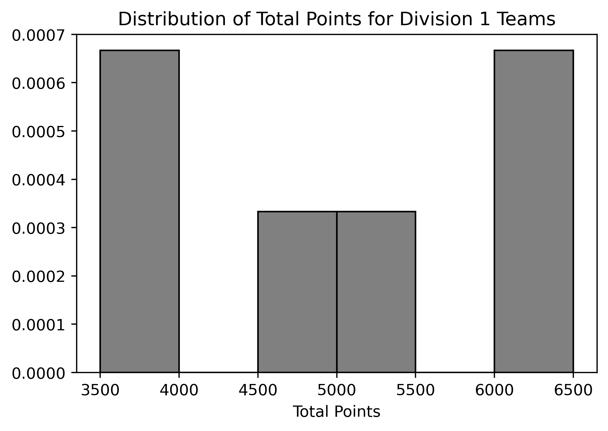
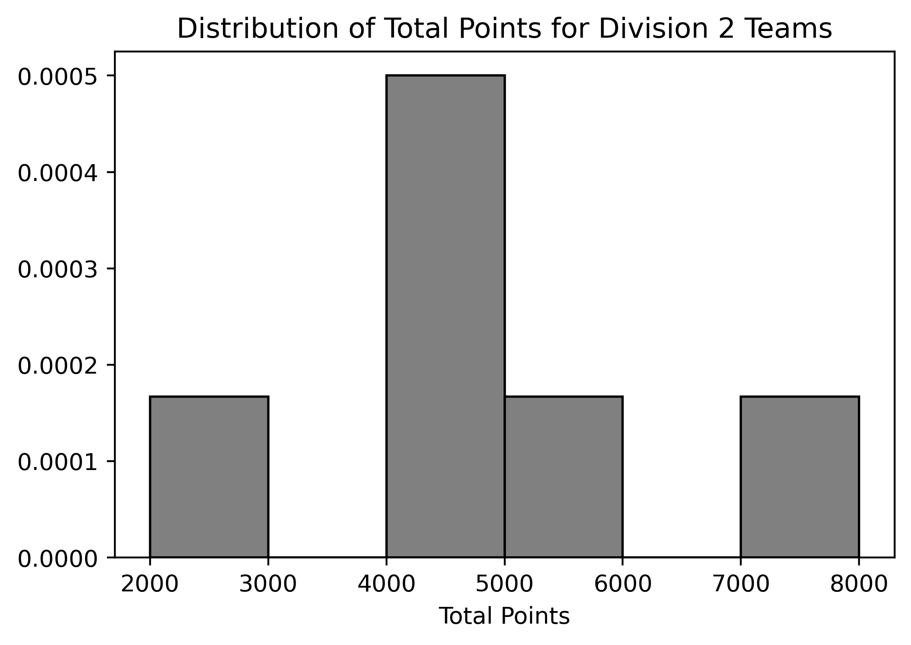
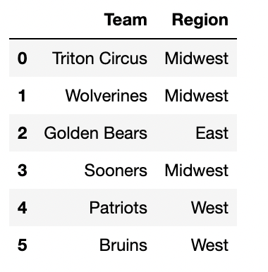
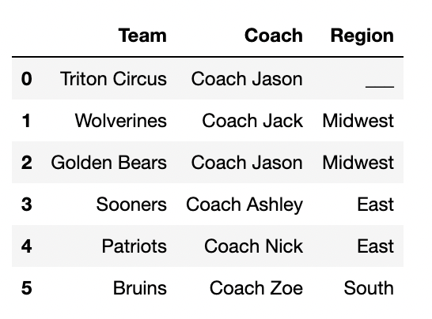

← return to practice.dsc10.com
Instructor(s): Nishant Kheterpal
This exam was administered in-person. The exam was closed-notes, except students were provided a copy of the DSC 10 Reference Sheet. No calculators were allowed. Students had 50 minutes to take this exam.
In this exam, you’ll work with a data set representing the results of
the Collegiate Mario Kart League. Each row represents a team and their
performance in the league. The columns of kart are as
follows:
"Ranking" (int): The team’s ranking within their
division. Rankings are from 1 to 6, with the best teams receiving rank 1
and the worst teams receiving rank 6."Team" (str): The name of the team."University" (str): The university the team
represents."Division" (str): The division in which the team
competes (Division 1 or Division 2). Each division includes six
teams."Total Points" (int): The total points scored by the
team during the season."Races Won" (int): The total number of races won by the
team."Region" (str): The geographic region of the
university.The first few rows of kart are shown below, though
kart has 12 rows in total (since there are 12 teams total,
6 in each division).
Assume that we have already run import babypandas as bpd
and import numpy as np.
Which column of kart would work best as the index?
"Ranking"
"Team"
"Division"
"Total Points"
Answer: "Team"
Recall a choice for a good index would be a column wherein the values
would act as a unique identifier for a particular observation. The only
column that suits this description would be “Team” since
each row represents a unique team.
The average score on this problem was 86%.
Write a line of python code that sets the index of kart
to the column that you identified in part (1).
Answer:
kart = kart.set_index("Team")
We use set_index(“Team”) to set the DataFrame’s index to
“Team” and set this equal to kart to save this
change.
The average score on this problem was 81%.
Fill in the blanks below to complete the implementation of the
function division_to _int, which takes in a string,
division, the name of a division, and returns the
division’s number as an int. Example behavior is given
below.
>>> division_to_int("Division1")
1
>>> division_to_int("Division2")
2def division_to_int(division):
__(i)__ __(ii)__(division.__(iii)__[__(iv)__])Answer:
returnintsplit() or
split(" ")-1 or 1Using the argument division, we just want to retrieve
the number. To accomplish this, we can use split() on the
division to separate the string in order to access the
number. Note that the default behavior of split() is to
split by the space.
The output of division.split() is now a list of
“Division” and the number. To retrieve the number in this
list, we can index for it with either -1 (since it is the last element
of the list) or 1 (since it is the second element in the list). Because
we want the output to be an integer type, we use int to
cast the value to an integer. Finally, to have the function output the
desired value, we start with a return statement.
The average score on this problem was 67%.
The average score on this problem was 71%.
The average score on this problem was 52%.
The average score on this problem was 52%.
Write a single line of code that applies
division_to_int to the existing "Division"
column, and updates the "Division" column in
kart.
Answer:
kart.assign(Division=kart.get("Division").apply(division_to_int))
First let’s start by getting the information we want for the new
column. We get the column for transformation with
kart.get(“Division”) and use
.apply(division_to_int) in order to apply the function to
this column. In order to update this transformed Series as a column
“Division”, we use the .assign method on the
DataFrame and set the transformed Series to the column name
“Division”. Note that when using .assign to
add a column and the chosen column name already exists,
.assign will update the information in this column with the
new input information.
The average score on this problem was 81%.
For the rest of this exam, assume that the changes above have not
been made and that kart is the same DataFrame that was
described on the attached information sheet.
Fill in the blanks so that the expression below evaluates to the
region in the "Region" column that comes first
alphabetically.
kart.groupby(___(a)___).count().index.___(b)___What goes in (a)?
"Ranking"
"Team"
"Division"
"Region"
What goes in (b)?
"max()"
"min()"
"len()"
"split()"
Answer:
"Region""min()"In order to curate a unique list of all the regions in the DataFrame,
we want to groupby “Region". Using
count() on this will count the number of observations for
each region as a row in the DataFrame which does not really matter here
since we just wanted the unique regions. .index will
retrieve the list of all the unique regions. In order to get the first
alphabetically, we can use min().
The average score on this problem was 100%.
The average score on this problem was 81%.
Fill in the blanks so that the expression below evaluates to the
"University" of the lowest scoring Division 2 team over the
whole season.
kart[__(a)__].__(b)__(__(c)__).get("University").iloc[0]Answer:
kart.get("Division") == "Division 2"sort values"Total Points" or
by="Total Points"First we want to filter the DataFrame for only the Division 2 teams
using kart.get("Division") == "Division 2".
Since we are interested in the lowest scoring team in this division,
we want to use sort_values on the
"Total Points" column giving
sort_values(by= “Total Points”). Since we are retrieving
.iloc[0], i.e. the top row of the DataFrame, we do not have
to specify the order of ranking since the default behavior of
sort_values is ascending.
The average score on this problem was 74%.
The average score on this problem was 90%.
The average score on this problem was 86%.
Consider the scatterplot generated by the following expression:
kart.plot(kind="scatter, x="Total Points", y="Races Won")Which of the following questions would you be able to answer from this scatterplot? Select all that apply.
What is the name of the team that has the highest number of races won?
How many teams scored more than 6000 total points?
How many teams scored less than 100 total points per race that they won?
Which Division 2 school scored the most total points?
Answer:: Option 2 and Option 3
The average score on this problem was 95%.
Fill in the blanks so that the sentence below correctly describes the
meaning of mystery.
“The __(i)__ __(ii)__ of the __(iii)__ __(iv)__ .”
mystery = kart.groupby("Region").mean().get("Ranking").min()What goes in (i)?
average
median
lowest
highest
What goes in (ii)?
university
team
region
ranking
What goes in (iii)?
average
median
worst
best
What goes in (iv)?
university
team
region
ranking
Answer:
mystery groups by the "Region", calculates
the mean values and retrieves the "Ranking" column. So we
have the average ranking for all the regions. Now we retrieve the
minimum value of this column. Note that in this context, a lower average
ranking indicates a better team. Hence, we get “the average ranking of
the best region”.
The average score on this problem was 67%.
The average score on this problem was 95%.
The average score on this problem was 14%.
The average score on this problem was 95%.
Fill in the blank in the code snippet below so that
my_bool is True if there is at least one
university with two teams in the same division, and False
if there are no universities with two teams in the same division. Your
answer must include the use of .groupby() in order to
receive credit.
my_df = ______my_bool = my_df.get("Team").max() > 1Answer:
kart.groupby(["University", "Division"]).count()
In the second line of code, we get the column “Team” and
check whether its maximum value is greater than 1. In other words, it is
checking whether there are any universities with multiple teams in a
division. This means that our input DataFrame needs to have a numeric
column "Team" that denotes the number of teams for each
university for each division. This means we need to use
groupby(). Since we want this information for each
university within each division, we need to groupby both
“University” and “Division”. Then, because we
want the number of teams within each division within each university,
you want to apply the count() aggregate. Now all the
columns in this DataFrame contain the number of teams per division per
university since count notes the number of observations in each
category.
From here, my_bool can take this transformed DataFrame,
get the “Team” column that contains the number of teams per
division per university and check if any of them are greater than 1 (by
simply getting the maximum value of this column) and checking whether it
is greater than 1.
The average score on this problem was 57%.
Below are two density histograms representing the distribution of Total Points for Division 1 and the distribution of Total Points for Division 2 teams (remember, there are six teams in each division):
 
Assuming we know the bin values for each histogram, what can we conclude from these two histograms? Select all that apply:
The number of teams in the rightmost bin on the histogram that displays the distribution of total points for Division 2 teams.
The number of Division 1 teams that scored 4000 points.
The number of Division 2 teams that scored between 2000 and 3000 points.
The number of Division 2 teams that scored fewer points than the lowest-scoring Division 1 team.
Answer: Option 1, 2, 3, and 4
Since we are working with density histograms, each rectangle’s area represents the relative frequency of the corresponding bin. Given that there are six teams in each division, we can use the relative frequencies to approximate the number of teams in each bin.
[2000, 3000) bin in Division 2, we
can calculate the area of the bar and then multiply it by the total
number of teams (6) to estimate the number of teams that fall within
this range.[3500, 4000).
Division 2 has a bin that starts at a lower range
[2000, 3000), which is below Division 1’s minimum bin.
Therefore, we can determine the number of Division 2 teams that scored
fewer points than the lowest-scoring Division 1 team.
The average score on this problem was 85%.
Suppose that we changed the histogram of total points for Division 2
teams so that the bins were
[2000, 4000), [4000, 6000), [6000, 8000). If the bin
defined by [2000, 4000) contained one team, as it does in
the original graph, what would the height of the middle bar (with bin
[4000, 6000)) be? Do not simplify your answer.
Answer: \frac{1}{3000}
First, we need to calculate the number of teams that scored in the
range of [4000,6000) in the original histogram for Division
2 teams:
Area of bar in bin[4000, 5000) * 6 + Area of bar in
bin[5000, 6000) * 6 = 0.0005 * 1000 * 6 + 0.00017 * 1000 *
6 = 4.02
Rounding to the nearest whole number, we find that approximately 4 teams fall within this range.
Next, we want to calculate the height of the bar with bin
[4000, 6000) in the new histogram. Using the fact that this
bin should contain 4 teams, we have:
Height * Width * 6 = 4
Solving for the height:
Height = 4 / (6 * 2000) = \frac{1}{3000}
The average score on this problem was 64%.
Suppose we drew different bins for the histogram of total points for
Division 2 teams. If the bin defined by [2000, 4000)
contained one team, as it does in the original graph, and the bin
defined by [4000, 4500) contained two teams, what would the
height of the bar with bin [4500, 5000) be? Do not simplify
your answer.
Answer: \frac{1}{3000}
In the original histogram, the bin defined by
[4000, 5000) contained: 0.0005 * 1000 * 6 = 3 teams
According to the description, the bin defined by
[4000, 4500) contained 2 teams.
Therefore, we can conclude that the bin defined by
[4500, 5000) contained: 3 - 2 = 1 team
In the bin [4500, 5000) of the new histogram, we have:
Height * Width * 6 = 1
Solving for the height: Height = 1 / (6 * Width) = 1 / (6 * 500) = \frac{1}{3000}
The average score on this problem was 32%.
The DataFrame div_one, shown below to the
left, contains the six Division 1 teams from
kart, with just the "Team" and
"Region" columns selected.
The DataFrame coach, shown below to the
right, contains some additional information about the
coaches of the teams in div_one, with a piece of info
missing.
|  |  |
Fill in the blank in the Region column with either
South, West, East, or
Midwest so that the DataFrame
div_one.merge(coach, on="Region") has:
Answer:
To determine the number of rows after merging two DataFrames
(div_one and coach) on the column
"Region", we need to calculate how many matches occur for
each region. When performing the merge, each row from
div_one will be combined with every matching row in
coach. The total number of rows in the resulting DataFrame
will depend on how many times each region value in div_one
has matching rows in coach.
div_one has 3 rows with Midwest, and 1 row with
East.coach has 2 rows with Midwest, and 2 rows with
East.div_one, it matches with both
Midwest rows in coach, resulting in 3×2=6
matches.div_one matches with the 2 East
rows in coach, contributing 1×2=2
matches.3 * 2(Midwest) + 1 * 2(East) = 8 rows.div_one has 3 rows with Midwest, and 1 row with
East.coach has 2 rows with Midwest, and 3 rows with
East.div_one, it matches with both
Midwest rows in coach, giving 3×2=6
matches.div_one matches with the 3 East
rows in coach, contributing 1×3=3
matches.3 * 2(Midwest) + 1 * 3(East) = 9 rows.div_one has 3 rows with Midwest, 1 row with East, and 2
rows with West.coach has 2 rows with Midwest, 2 rows with East, and 1
row with West.div_one, it matches with both
Midwest rows in coach, resulting in 3×2=6
matches.div_one matches with the 2 East
rows in coach, contributing 1×2=2
matches.div_one each match with the single
West row in coach, contributing 2×1=2
matches.3 * 2(Midwest) + 1 * 2(East) + 2 * 1(West) = 10 rows.div_one has 3 rows with Midwest, and 1 row with
East.coach has 3 rows with Midwest, and 2 rows with
East.div_one, it matches with all
three Midwest rows in coach, resulting in
3×3=9 matches.div_one matches with the 2 East
rows in coach, contributing 1×2=2
matches.3 * 3(Midwest) + 1 * 2(East) = 11 rows.
The average score on this problem was 61%.
What is the value of the following Python expression?
coach.merge(coach, on="Coach").merge(coach, on="Coach").shape[0]Answer: 12
First Merge: The expression starts by merging the coach DataFrame with itself on the “Coach” column. Each row in coach that has the same coach will match with every other row (including itself) that has the same coach.
Total rows from this merge: 4+1+1+1+1=8 rows.
Second Merge: Now we take the result of the first merge (which has 8 rows) and merge it again with the original coach DataFrame on the “Coach” column.
Total rows from this merge: 8+1+1+1+1=12 rows.
Result:
The expression returns the number of rows in the final merged
DataFrame.
Result: The final DataFrame has 12 rows.
The average score on this problem was 19%.
There’s been an expansion of Collegiate Mario Kart across the
country, so to determine a champion, we’d like to set up a bracket for a
Mario Kart tournament and fill it with four college teams from
bigkart. We won’t display bigkart for this
question, but assume it’s a larger version of kart: there
are 50 rows in bigkart, and thus 50 teams. Selection is
performed uniformly at random, so that each team has the same chance of
being selected. Please leave your answers in
unsimplified form: answers of the form (\frac{3}{4}) \cdot (\frac{2}{3}) or \left[1 - (\frac{1}{2})^4\right] are
preferred.
Assume we populate our tournament by randomly selecting four teams
from bigkart with replacement. What is the
probability there are no duplicates among the four teams selected for
the tournament? Do not simplify your answer.
Answer: \frac{1}{1} \cdot \frac{49}{50} \cdot \frac{48}{50} \cdot \frac{47}{50}
We need to find the probability that there are no duplicates among
the four teams selected for the tournament from bigkart
with replacement. Since we are selecting four times, we
want each selected team to be unique.
The total probability that there are no duplicates among the four teams selected is the product of these probabilities: \frac{1}{1} \cdot \frac{49}{50} \cdot \frac{48}{50} \cdot \frac{47}{50}
The average score on this problem was 45%.
Now, assume we populate our tournament by randomly selecting four
teams from bigkart without replacement.
Additionally, assume 30 are from Division 1 and 20 teams are from
Division 2. What is the probability that there is at least one Division
2 team among the four teams selected for the tournament? Do not simplify
your answer.
Answer: 1 - \frac{30}{50} \cdot \frac{29}{49} \cdot \frac{28}{48} \cdot \frac{27}{47}
We are selecting four teams from bigkart without
replacement, and we want to calculate the probability that
at least one Division 2 team is selected, which
represented as P(A). We know that there are 30 Division 1 teams and 20
Division 2 teams.
First calculating the complement probability, P(Ac) which is the probability that all four teams are from Division 1.
The probability that all four teams are from Division 1 is: \frac{30}{50} \cdot \frac{29}{49} \cdot \frac{28}{48} \cdot \frac{27}{47}
To find the probability of at least one Division 2 team being selected, we use P(A) = 1 - P(Ac): 1 - \frac{30}{50} \cdot \frac{29}{49} \cdot \frac{28}{48} \cdot \frac{27}{47}
The average score on this problem was 57%.
We want to estimate the probability that the University of Michigan is among the four teams selected when schools are selected without replacement.
schools = np.array(kart.get("University"))
mystery_one = 0
num_trials = 10000
for i in np.arange(num_trials):
bracket = __(i)__
if "Michigan" in bracket:
mystery_one = __(ii)__
mystery_two = mystery_one / num_trialsFill in the blanks to complete a simulation.
(i): ________________________________________
(ii): ________________________________________
Answer:
np.random.choice(schools, 4, replace=False)mystery_one = mystery_one + 1schools array. The correct syntax is
np.random.choice(arr, size, replace=True, p=[p_0, p_1,
…])schools.4,
because we want to select four teams.replace=False.mystery_one, which counts how many
times “Michigan” appears in the randomly selected teams across the
trials. In each iteration of the loop, if “Michigan” is in the randomly
selected bracket, we increment mystery_one by 1.
The average score on this problem was 67%.
What is the meaning of mystery_two after the code has
finished running? ( ) The number of times Michigan was in the tournament
( ) The number of trials we ran ( ) The proportion of times Michigan was
in the tournament ( ) None of these answers is what
mystery_two represents
Answer: The proportion of times Michigan was in the tournament
If “Michigan” is found in bracket, mystery_one is
incremented by 1. This means mystery_one keeps track of how
many times Michigan appears in the four selected teams across all 10,000
trials. Therefore, at the end of the loop, mystery_one
contains the total number of trials in which Michigan was selected.
mystery_two is calculated as mystery_one /
num_trials. Since mystery_one is the count of
trials where Michigan was selected, dividing it by num_trials (the total
number of trials) gives the proportion of trials where Michigan was
chosen among the four teams.
The average score on this problem was 81%.
For the next two parts only, imagine we wanted to simulate a 16-team tournament, where teams are selected with replacement. Which blank should be filled in?
blank (i)
blank (ii)
Answer: blank (i)
When simulating a 16-team tournament, where teams are selected with replacement, Blank (i) should be used because that is where the selection occurs. We need to adjust this line to account for selecting more teams (16 teams) and to allow replacements.
The average score on this problem was 67%.
What code should be used to fill in the blank you selected above?
Answer:
np.random.choice(schools, 16, replace=True)
We change size=4 to size=16 to select 16 teams, and replace=True allows the same team to be selected multiple times within a single trial.
The average score on this problem was 45%.